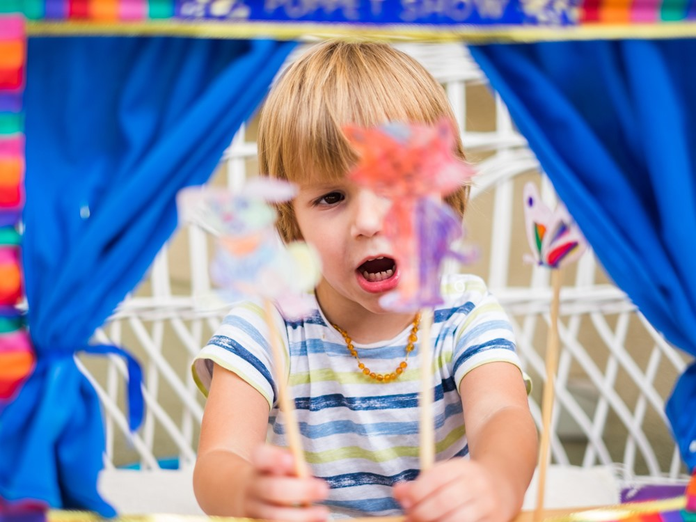

The Role of Drama in Fostering Creativity
Drama and puppets give children the freedom to find out emotions, imagine new roles and tell their stories. These activities help with emotional expression, language skills, sympathy and confidence. They are especially powerful for children who are shy - can be a safe way to share ideas and feelings.
What do theorists say?
Sarah Smilansky emphasized the importance of sociological sports - where children take roles and act as landscapes as the key to development. Wagotsky also saw the learning driver play dramatically. The Razigio Emilia approach sees the play as one of the many creative "languages" that uses to create the meaning of children.
Resources and tools
Create a dramatic play corner with a rotating theme (such as a grocery store, animal hospital or bakery). Bring open props: costumes, masks, hats, scarves or household items. Dolls can be made from socks, paper bags or shadows. Digital equipment such as Stop Motion Studios allows children to raise awareness of the marionette stories. You can record voiceover to create a story video or use tablet.
Age Learning Experiences
-
0-2 years
- Mirror play with scarves: Children look at themselves, helping with self-awareness and expression.
- Hand doll talk: Simple towels or hand dolls engage infants in fun, social interaction.
-

2-3 years
- Animal copying games: Children pretend to be animals using movement and sound, improving imagination.
- Peekaboo puppet stories: Stories using dolls help with language and storytelling.
-
3-5 years
- Shadow puppet theater: Using light and paper dolls, children create simple story scenes.
-
6-8 years
- Script writing and acting: Children write and perform their own mini-plays, developing fiction and confidence.
- Stop-motion puppet video: Children make small puppet movies using a tablet, combining storytelling and technology.